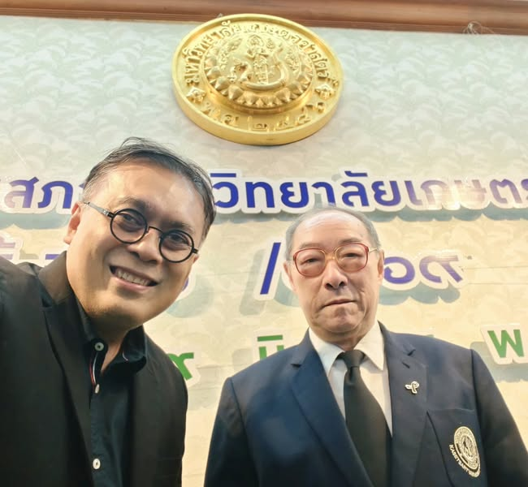

วาระสิ้นสุดลงได้ แต่คำถามบางคำถามยังควรถูกถามต่อไป
{kind=link}

วันที่ 29 มิถุนายน 2569 เป็นการประชุมสภามหาวิทยาลัยวาระปกติครั้งสุดท้ายของผม ก่อนหมดวาระกรรมการสภามหาวิทยาลัยประเภทคณาจารย์ประจำ โดยยังมีการประชุมพิเศษอีกครั้งในวันที่ 13 กรกฎาคมเพื่อส่งมอบตำแหน่งอธิการบดี
วาระของผมจึงครอบคลุมช่วงเปลี่ยนผ่านสำคัญ ตั้งแต่การรักษาการอธิการบดี กระบวนการสรรหา การได้อธิการบดีคนใหม่ ไปจนถึงการส่งมอบงาน
13 วาระไม่ใช่รายการแยกส่วน แต่สะท้อนโจทย์มหาวิทยาลัย 5 ด้าน
ตลอดช่วงการทำหน้าที่ ผมเสนอวาระเชิงนโยบายต่อสภามหาวิทยาลัย 13 เรื่อง ทุกวาระถูกนำเข้าสู่การพิจารณา และหลายเรื่องได้รับการอภิปรายอย่างกว้างขวาง เมื่อจัดกลุ่มจะเห็นเสาหลักที่เชื่อมกันห้าด้าน
1. งบประมาณ ทรัพยากร และความคุ้มค่า
กลุ่มแรกตั้งคำถามว่าทรัพยากรของมหาวิทยาลัยถูกจัดสรรตามเป้าหมายหลักหรือไม่ ตั้งแต่การติดตามและประเมินผลงบประมาณ การทบทวนบทบาทของหน่วยงานกลางด้านการเรียนรู้ ไปจนถึงการปรับโครงสร้างงานสารสนเทศและงานวิชาการให้ประสานงานและใช้ทรัพยากรได้มีประสิทธิภาพขึ้น
แกนของเรื่องไม่ใช่เพียงลดรายจ่าย แต่คือทำให้ทรัพยากรที่มีจำกัดสร้างคุณค่าทางวิชาการและผลลัพธ์เชิงยุทธศาสตร์ได้จริง
2. ภาควิชา อาจารย์ และฐานความเข้มแข็งทางวิชาการ
กลุ่มที่สองมองภาควิชาและอาจารย์เป็นฐานการผลิตคุณค่าของมหาวิทยาลัย จึงเสนอทั้งนโยบายสนับสนุนภาควิชาให้เติบโตตามจุดแข็ง การยกระดับคุณภาพชีวิตและความมั่นคงในอาชีพของอาจารย์ และการปรับโครงสร้างบริหารงานวิจัยให้บทบาทและการปฏิบัติงานชัดเจน
มหาวิทยาลัยไม่สามารถเข้มแข็งด้วยส่วนกลางเพียงลำพัง หากหน่วยวิชาการที่สอน สร้างคน และสร้างความรู้ไม่มีทรัพยากรหรือสภาพแวดล้อมที่ทำให้เติบโตได้
3. อนาคตการศึกษา AI และตลาดแรงงาน
กลุ่มที่สามมองออกไปข้างหน้า ทั้งการปรับยุทธศาสตร์มหาวิทยาลัยในยุค AI และการแข่งขันระดับโลก และการลดช่องว่างระหว่างการผลิตบัณฑิตกับตลาดแรงงาน เพื่อให้การเรียนรู้เชื่อมกับความสามารถในการทำงานและการสร้างคุณค่าในโลกจริง
โจทย์นี้ไม่ควรถูกลดเหลือเพียงเพิ่มรายวิชา AI หรือปรับชื่อหลักสูตร แต่ต้องกลับไปถามว่ามหาวิทยาลัยกำลังสร้างคนแบบใด และระบบการเรียนรู้จะช่วยให้เขาปรับตัวต่อการเปลี่ยนแปลงได้อย่างไร
4. ระบบข้อมูล การรับฟังความคิดเห็น และการลงคะแนน
กลุ่มที่สี่เสนอให้มหาวิทยาลัยมีมาตรฐานสำหรับการรวบรวมความคิดเห็นและการลงคะแนน รวมทั้งพัฒนาการสรรหาและเลือกตั้งผ่านระบบออนไลน์โดยคำนึงถึงความมั่นคงปลอดภัยและธรรมาภิบาล
ระบบดิจิทัลที่ใช้งานได้ไม่ได้แปลว่ากระบวนการน่าเชื่อถือโดยอัตโนมัติ ต้องตอบให้ได้ว่าใครมีสิทธิ์ ข้อมูลถูกปกป้องอย่างไร ตรวจสอบผลได้เพียงใด และผู้ให้ความคิดเห็นปลอดภัยจากแรงกดดันหรือการเปิดเผยตัวตนหรือไม่
5. ธรรมาภิบาล การสรรหา และการประเมินผู้บริหาร
กลุ่มสุดท้ายครอบคลุมหลักเกณฑ์กลางสำหรับการสรรหาผู้บริหารส่วนกลาง การลดความเสี่ยงผลประโยชน์ทับซ้อน กระบวนการประเมินผู้บริหารที่รักษาความลับของผู้ให้ความเห็น และกติกาการเปิดเผยและจัดการส่วนได้เสียตลอดกระบวนการเสนอชื่อ เห็นชอบ และแต่งตั้ง
นี่เป็นเรื่องที่ยังน่ากังวลที่สุด หลายปัญหามองเห็นได้ชัดว่าควรแก้ แต่การเปลี่ยนกติกาที่เกี่ยวข้องกับอำนาจ ความสัมพันธ์ และผลประโยชน์ในทางปฏิบัติไม่เคยง่าย
การนำเรื่องเข้าสู่สภาเป็นจุดเริ่ม ไม่ใช่หลักฐานว่าปัญหาถูกแก้แล้ว
บางวาระได้รับการอภิปรายยาวนาน บางเรื่องอาจยังไม่เริ่มต้นอย่างเป็นรูปธรรม การมีมติรับทราบหรือมอบหมายจึงไม่ควรเป็นจุดจบ ต้องมีผู้รับผิดชอบ กรอบเวลา หลักฐานความก้าวหน้า และการติดตามว่าการเปลี่ยนแปลงเกิดขึ้นจริงหรือไม่
อย่างน้อย การเสนอวาระทำให้ปัญหาที่อาจเงียบอยู่ถูกบันทึกและได้รับพื้นที่ในกระบวนการทางการ เป็นการหว่านเมล็ดพันธุ์ทางความคิดที่คนรุ่นต่อไปสามารถหยิบไปผลักดันต่อ
หน้าที่ของกรรมการจากคณาจารย์คือพูด ถาม และเสนออย่างตรงไปตรงมา
ผมพยายามทำหน้าที่ในแบบที่คิดว่ากรรมการสภาจากคณาจารย์ควรทำ คือพูดในเรื่องที่ควรพูด ตั้งคำถามในเรื่องที่ควรถาม และเสนอประเด็นที่เกี่ยวข้องกับอนาคตของมหาวิทยาลัยอย่างตรงไปตรงมา
วาระสิ้นสุดลงได้ แต่คำถามบางคำถามยังควรถูกถามต่อไป
บทความที่เกี่ยวข้อง สภาที่ทำให้เรื่องสำคัญไม่เงียบหายไป วิสัยทัศน์ต่อบทบาทของกรรมการสภามหาวิทยาลัยที่ตั้งคำถามบนข้อมูล หลักการ และการติดตามผล